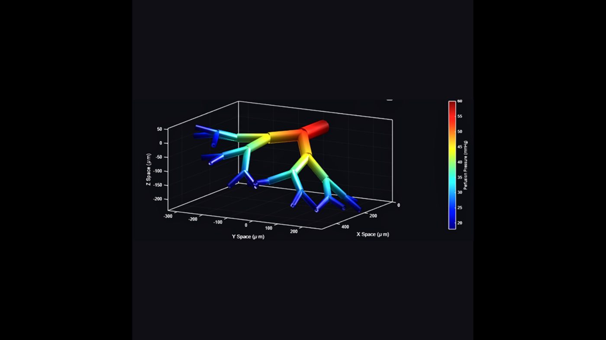
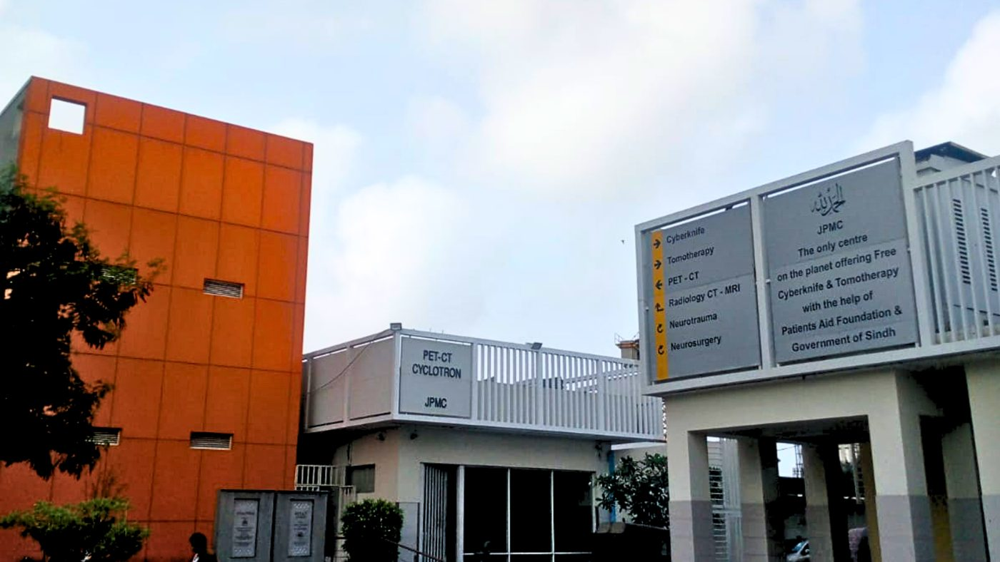

Biomedical engineering
Bachelor of Engineering, Biomedical Engineering at Ziauddin University, 2024 to December 2027 (expected). CGPA 3.82 / 4.00. Transcript available on request by email.

SIM-IE
A web-based simulation ecosystem for biomedical engineering education: interactive virtual laboratories, biomedical equipment simulations and digital twin environments for project- and problem-based learning.
Built with Unity and web technologies. VR, device-maker training and global collaborative learning are next.
Founder and lead developer, since April 2026
Skin models
A 2D skin model in COMSOL Multiphysics, built on the Pennes bioheat equation, showing how skin roughness affects melanoma detection in infrared thermography. Developed as a mentee project since January 2026.

3D skin capillary model
In progress, since January 2026

Clinical exposure
Intern at the Department of CyberKnife and Tomotherapy, JPMC, June 2026. I studied how CyberKnife S7, CyberKnife VSI and Tomotherapy X9 by Accuray work and treat, and watched troubleshooting and error handling with service engineers.
Brain-computer interfaces
BCI & Neurotechnology Spring School 2026 by g.tec Medical Engineering, Austria: 130 awarded hours.
BR4IN.io hackathon 2026: P300 speller data analysis with a group from Italy and France, using recordings from five subjects on the Unicorn Brain Interface.
Presented and competed
- SIM-IE presented at IBFT'26 (SSUET & UTM) among researchers from Pakistan, Malaysia, the United States and Italy
- Pro Battle'25, IBA Karachi: a line-following robot with Arduino UNO
- Earlier builds: hearing aid circuit, ESP32 drone, digital code lock
Tools
MATLAB, COMSOL Multiphysics, Python, C#, C, Unity, Godot, SOLIDWORKS, Arduino, Kinovea, MultiSim, NI Elvis, Materials Studio, Figma, FlutterFlow.
Certifications
- Regenerative Medicine and Stem Cell Conference (RSC 2026), ACCME
- Materials: Modeling and Simulations Using Materials Studio, 2024
- Use, Care and Maintenance of Scientific and Laboratory Instruments, PCSIR, 2024